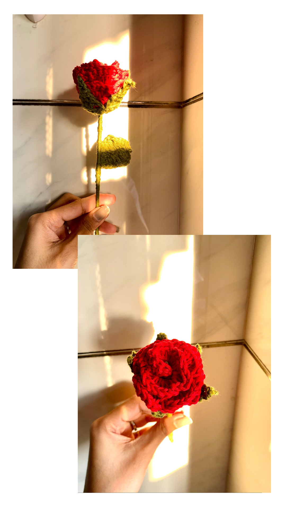

I can’t even put into words how excited I am for today’s blogpost! I am incredibly thankful for the
small little community I have been able to cultivate here on my blog and through social media.
Check pattern link here
Crochet
Rose

Let’s make the flower of love. This crochet rose pattern shows how to make a realistic rose with
exquisite detailing. You get a step by step details on how to crochet the flower’s core and delicate
petals and arrange them into a beautiful design.
pattern link here
More
projects